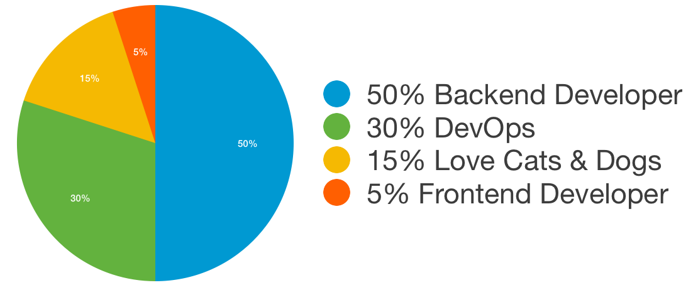
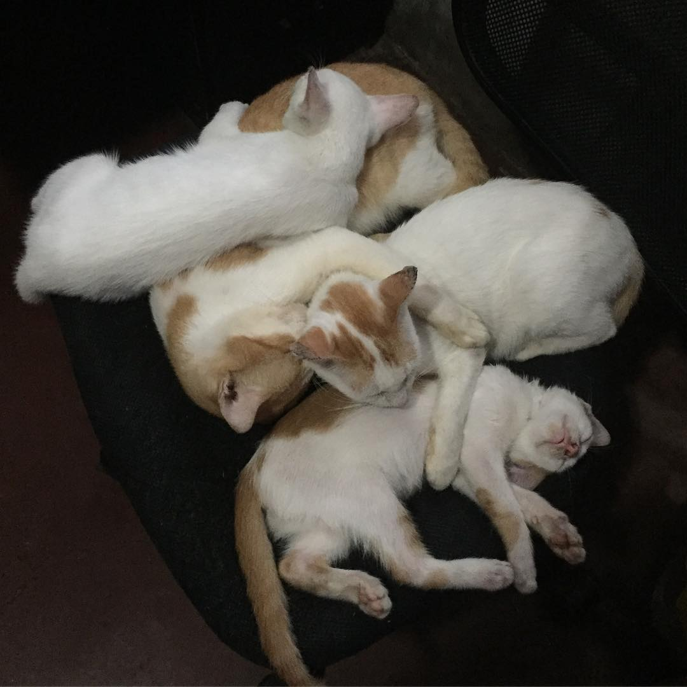
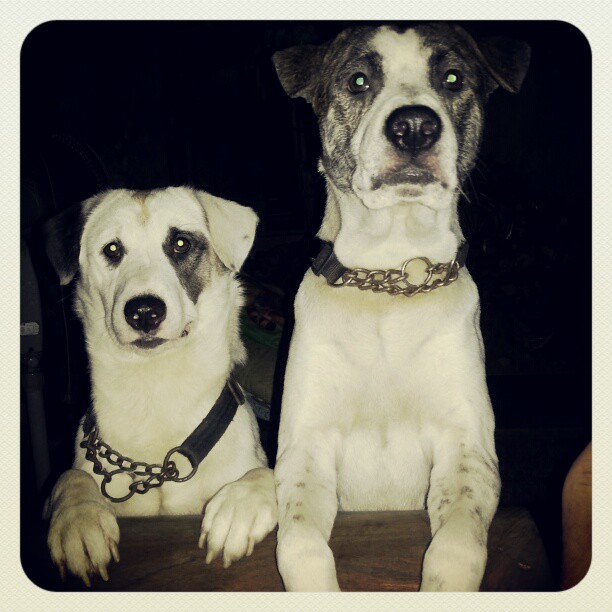
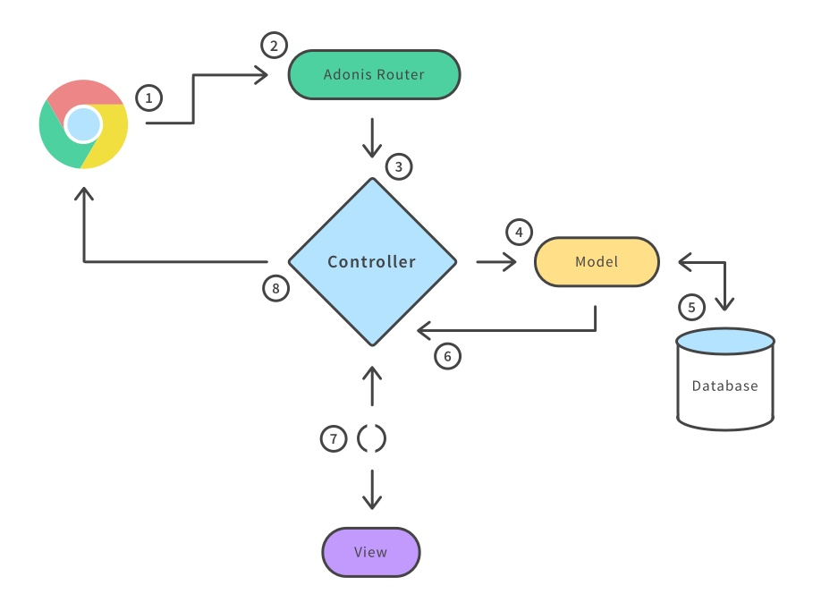

Meet AdonisJS
https://adonisjs.com
Hi! I'm Carlson
I'm a Developer
Full-Stack?
Half-Stack?
The out of stack Developer
50% Backend Developer
- PHP
- Javascript
- Perl
- Bash
- MySQL
- Redis
- etc...
30% DevOps
- AWS
- Google Cloud
- Nginx
- etc...
15% Love Cats & Dogs
 5% Frontend Developer
- HTML5
- CSS3
- MV* Frontend Framework
- JQuery! Why not?

More about me: @carlsonorozco
What is AdonisJS?

AdonisJS
Node.js web framework with a breath of fresh air and drizzle of elegant syntax on top of it.
WAF in other languages
- Django - Python
- Flask - Python
- Ruby on Rails - Ruby
- Sinatra - Ruby
- Laravel - PHP
- Codeigniter - PHP
- Symfony - PHP
- Mojolicious - Perl
- Spring - Java
What about JavaScript
- ExpressJS
- Total.js
- Hapi.js
- Meteor
- Koa JS
- Trails JS
MVC Pattern
Yet Another Web Application Framework
Directory Structure

Framework concept and Features
More features
- Authentications - Sessions, Basic Auth, JWT, and Personal API Tokens
- File upload
- ORM - Lucid
- Template Engine - Edge
- Migrations
- Seeds & Factories
- Validator
- Encryption and Hashing
- and more...
Demo

Why AdonisJS
1. Work on ideas, instead of deciding or downloading bunch of modules everytime.
2. Hiring developers are easy as you and the one you are about to hire will be working on the same standards and conventions.
3. The framework makes use of latest inbuilt ES2015 features to get rid of spaghetti code.

4. AdonisJS ships with a bunch of 1st party components known as providers. Writing entire web server is a matter of weeks(if not days).

"Secret to productivity is not finding more time to do more stuff, but finding the strength to do less of the stuff that doesn’t need doing." – David Heinemeier Hansson
Questions?
Give it a try